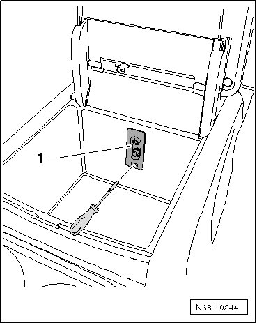
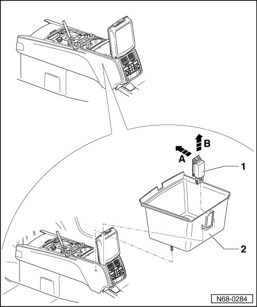

Center Console Storage Compartment
Center Console Storage Compartment
Removing
- Switch off ignition.
Vehicles with an "AUX-in" socket in the storage compartment (through November 2006)

- Insert a small screwdriver in connector opening - 1 -.
- Press screwdriver downward and release catch from connector.
- Remove connector, beginning in lower area, from opening in storage compartment.
- Disconnect wiring harness from connector.
Vehicles with an "AUX-in" socket in the storage compartment (from December 2006)
- Remove the "AUX-in" socket.
Vehicles with storage compartment light
- Pry upper edge of lamp - 1 - in direction of travel - arrow A - out of storage compartment using wedge (T10039/1).
- Pull lamp upward out of storage compartment - arrow B - and disconnect lamp plug from wiring harness.
All vehicles
- Pull compartment - 2 - upwards out of center console.

Installing
- Perform the steps used for removal in reverse order.